Amateur artist T Wong is a great art lover and an admirer of Khalil Ibrahim's works. Now retired, he spends his time creatively painting.
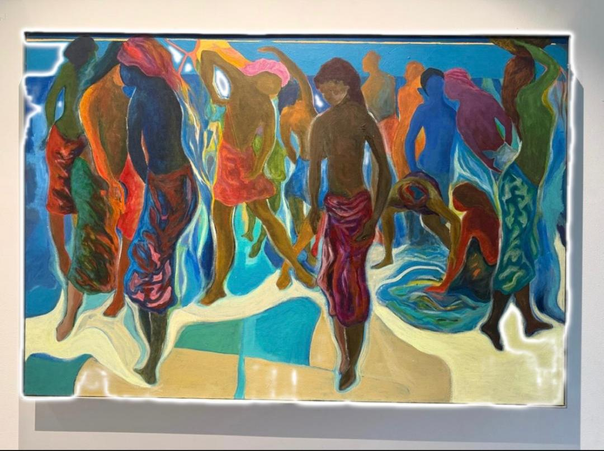
As a final year med student, she has a creative outlet using her Instagram to show how she reproduced Nicok Kfoury's work step by step.
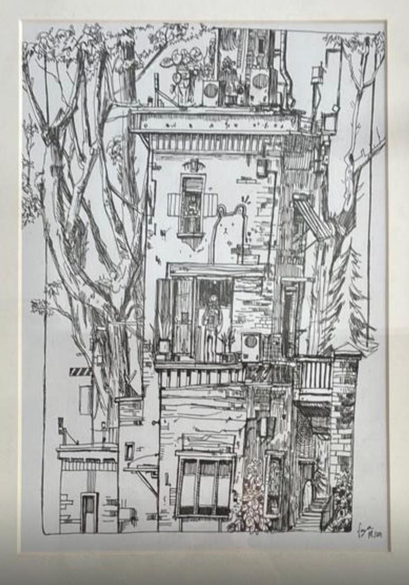
TJ Rameli is a visual artist born in Kuala Terengganu and currently based in Selangor, Malaysia. Spending a large portion of his life crafting music and visual arts, mostly for independent music circles, while plying his trade in a few small advertising agencies doing graphic design and art directing. After deciding not to continue with agency life, he picked up his tools again and began his lifelong artistic habits by drawing human figuratives exploring motions and emotions, focusing on personal and social matters. He is currently working independently, with his works residing in a number of private collections. Artist statement: “My work explores human figures as moving vessels of emotion within a landscape of memory. Through my paintings and drawings, I capture the subtle tension between presence and absence, the visible and the unseen. I approach figurative painting not as a mirror of reality but as a process of distillation, where forms always shift between recognition and abstraction. Each brushstroke is guided by my instinct as much as observation, allowing chance and intuition to shape the figures as they emerge. In doing so, I invite viewers to recognize themselves in fragments—gestures, silences, traces of feeling—a constant motion that keeps reminding us that a figure is never just one body, but a shared space of human connection.”
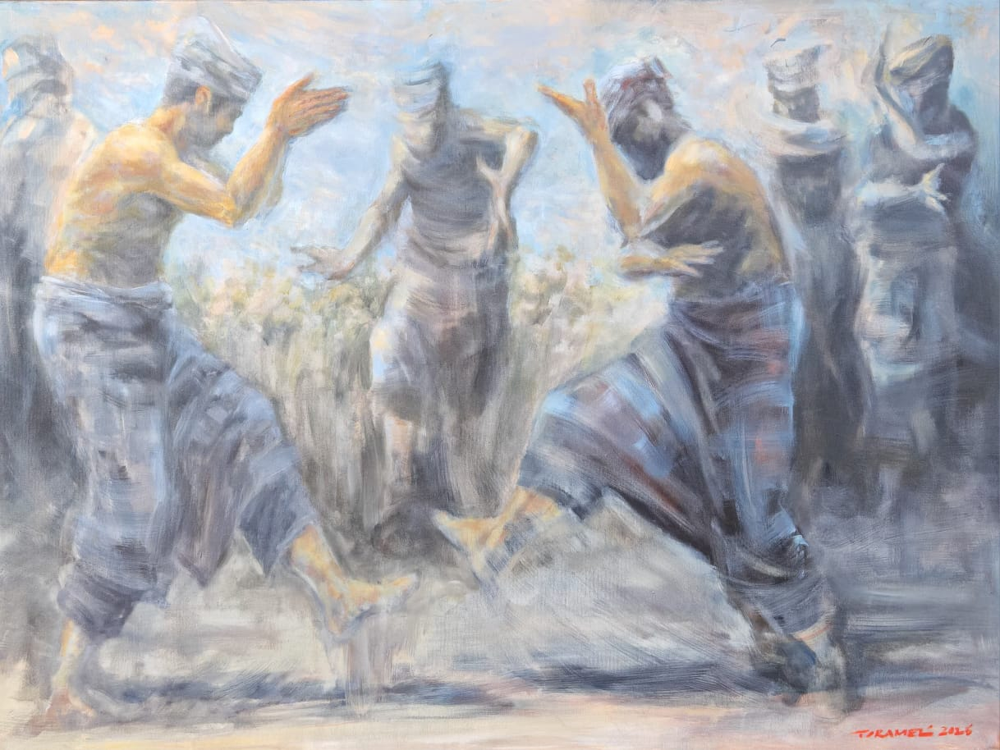
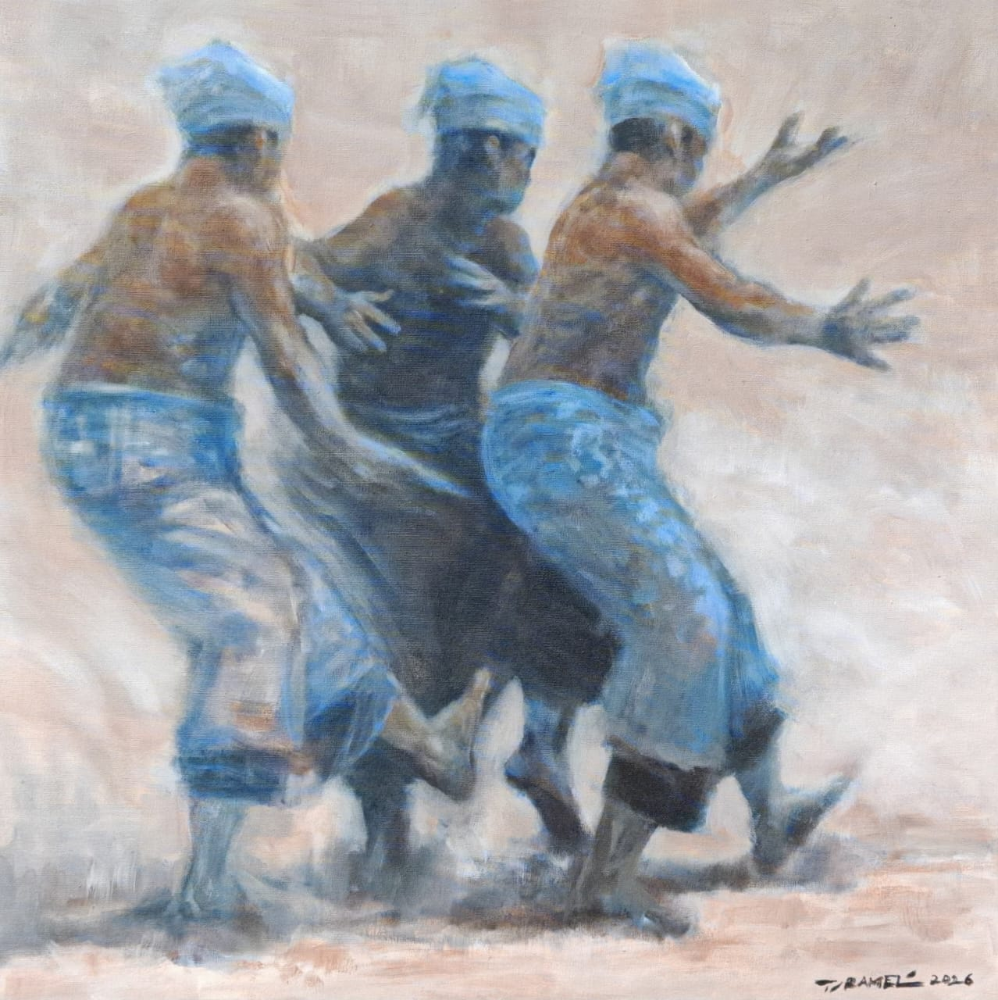
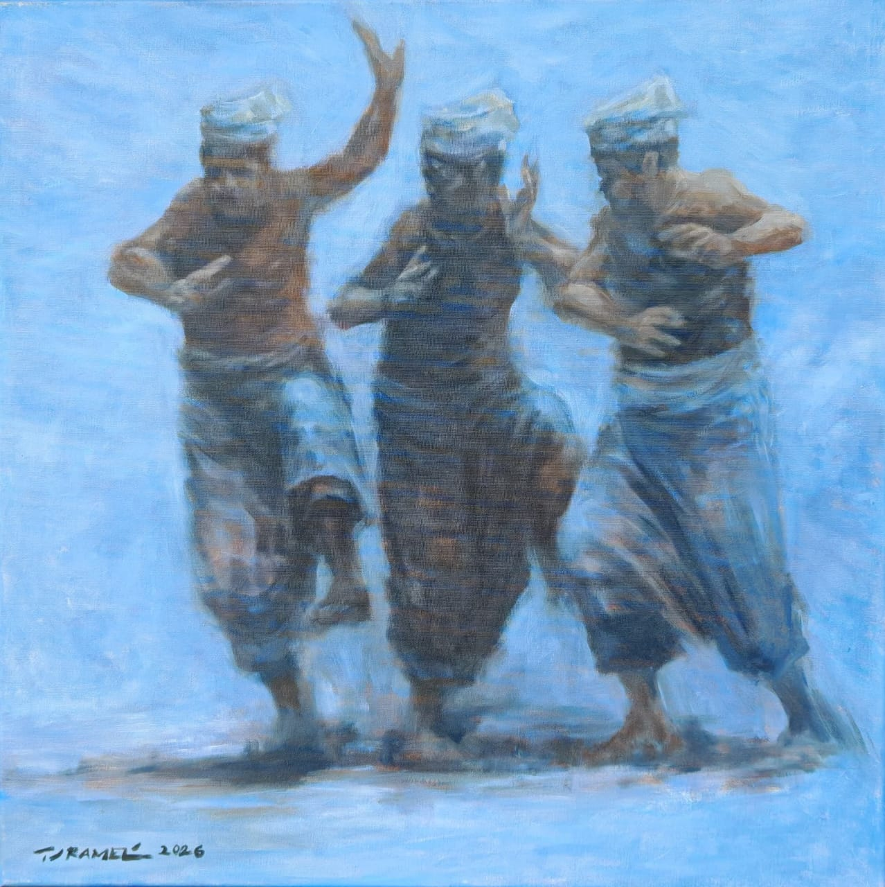
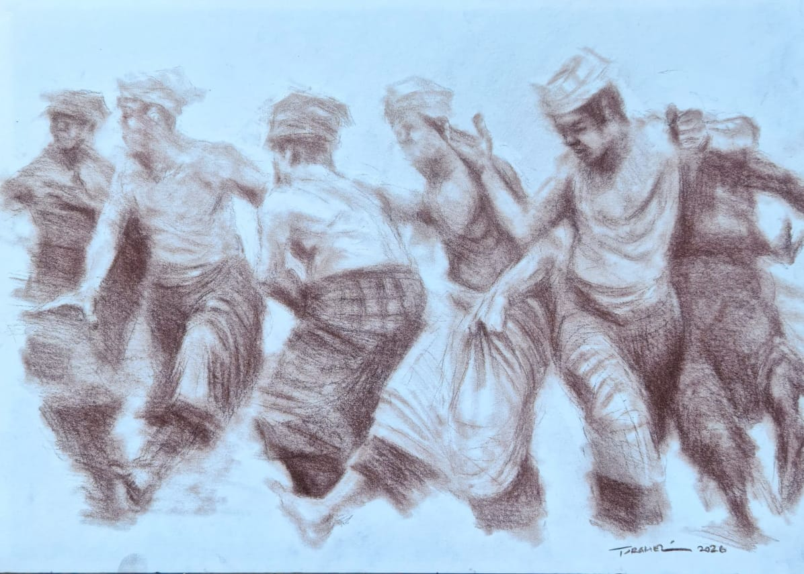
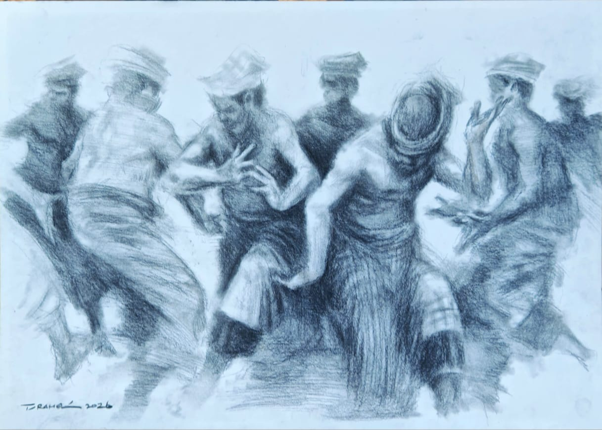
Chi Chern Fa Shi currently resides in Malaysia. He is a prominent Buddhist monk, Chan master and the first Dharma heir of the late Master Sheng Yen. He currently serves as the principal of the Malaysian Buddhist Institute.
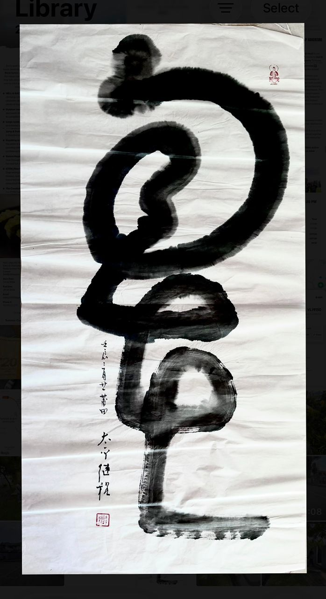
Lin Ho is an acclaimed professional architectural and interior photographer based in Malaysia with over two decades of experience. He has collaborated with architecture professor Robert Powell on books such as The Tropical Malaysian House (Volumes 1 and 2) and Inch-Gardens of Imagination.
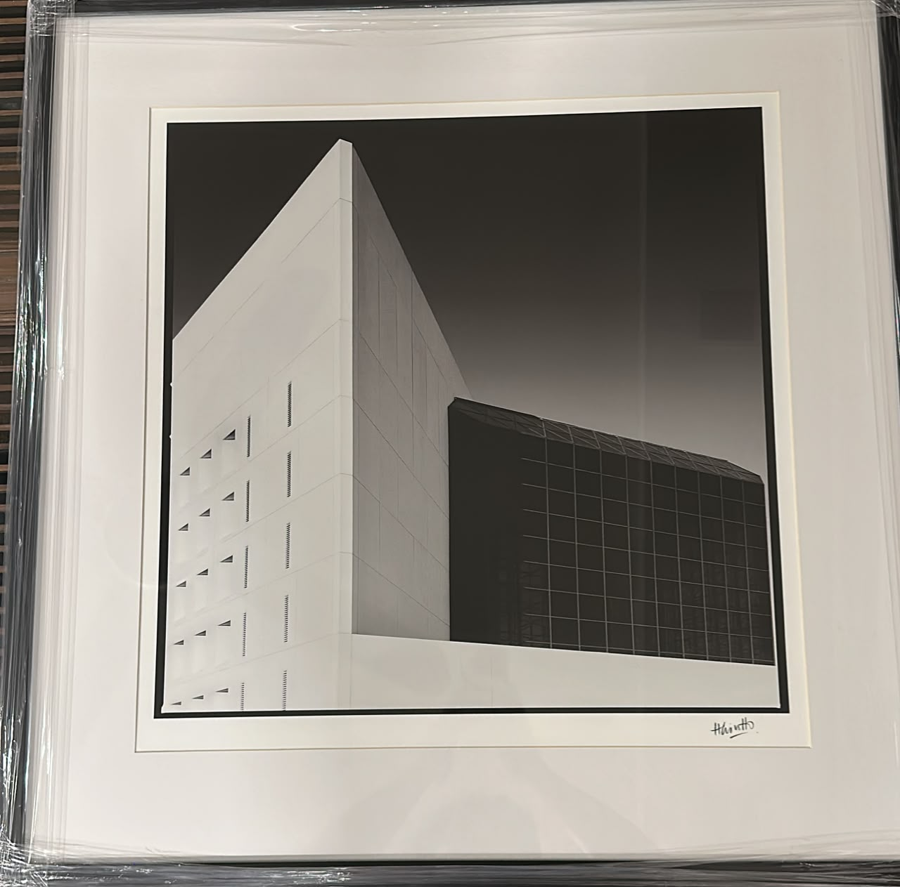
Tew Nai Tong (1936–2013) was a renowned Malaysian Nanyang artist and a co-founder of the Malaysian Watercolour Society and the Contemporary Malaysian Watercolourist Association. He was awarded the grand prize at the Asia Art Award in Seoul, South Korea, in 2009, for his artistic contributions to Malaysia and the wider Asian community.
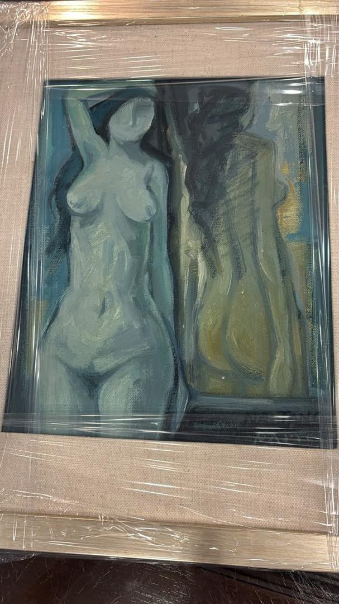
Chong Siew Ying (b.1969, Kuala Lumpur) trained in France at the École des Beaux-Arts de Versaillais and Atelier 63, spending nearly two decades in Paris before returning to Malaysia. She has held solo exhibitions at Valentine Willie Fine Art and The Edge Galerie in Kuala Lumpur and Singapore, Galerie Deprez-Bellorget in Paris, Byron Cohen Contemporary Art in the USA, and has participated in regional and international platforms such as Scope Miami (2007), One Belt One Road, Sotheby’s Hong Kong (2016), Art Stage Singapore (2015). A former Rimbun Dahan artist-in residence (1999-2000), and recipient of the Freeman Asian Artist Fellowship at the Vermont Studio Center (2001), she was invited to the Asian Artist Residency Program at the Gwangju Cultural Foundation, South Korea (2012). Chong was also awarded the Special Prize at Malaysian Young Contemporary Artists Competition (2002) and was a finalist for the Sovereign Asian Art Prize, Hong Kong (2009). Her work appears in major private collections as well as at Kuala Lumpur National Art Gallery and the Singapore Art Museum.
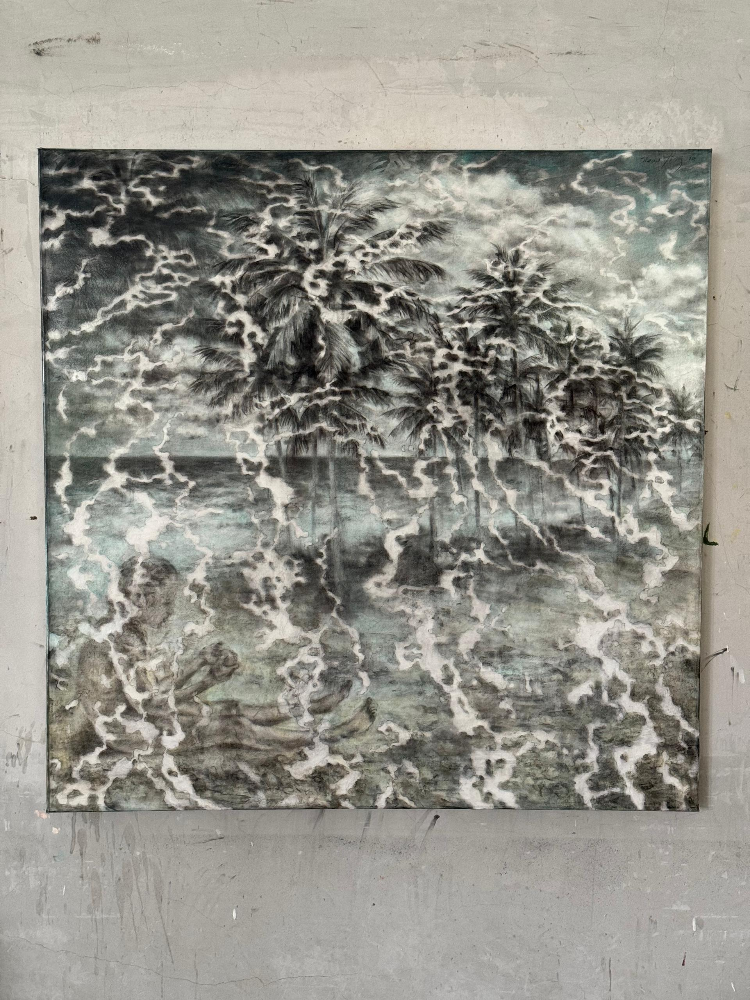
Donor artist — biography not yet available.
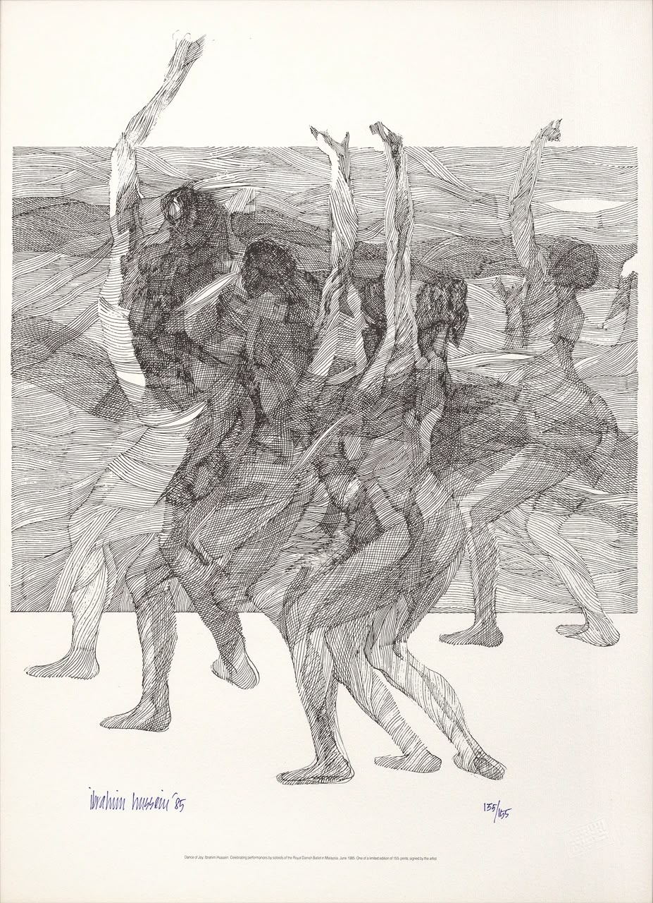
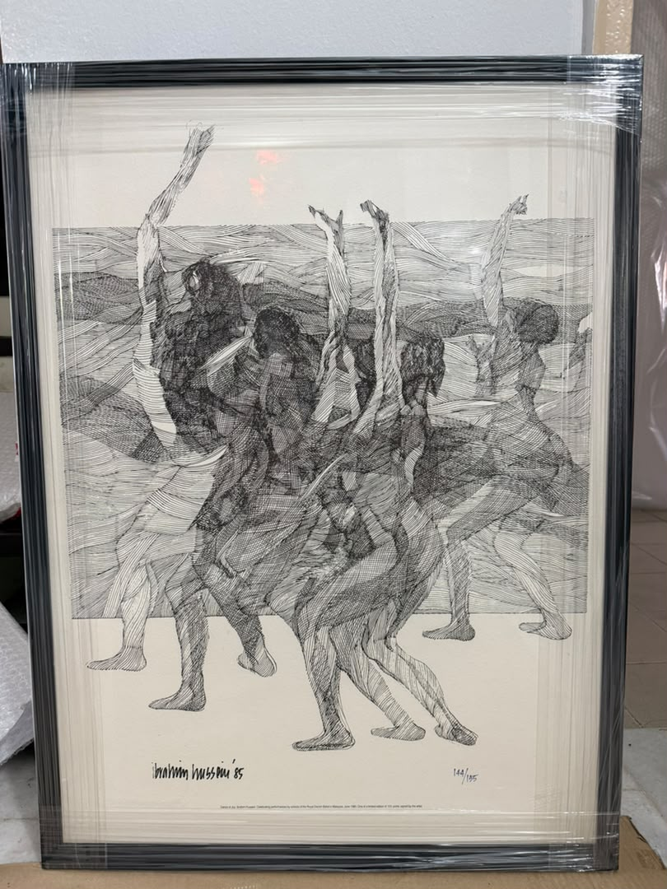
SC Shekar is a Malaysian photojournalist, documentary photographer, filmmaker and publisher whose career spans more than three and a half decades. From the streets of New York to the riverbanks of Varanasi and the interiors of Southeast Asia, his work is rooted in patient, honest visual storytelling. He began in the early 1980s as a photo-journalist working for newspapers and news agencies around the world, honing the instincts of a visual journalist: to observe closely, respond quickly and tell stories with clarity and integrity. His practice later evolved into long-form documentary projects that explore people, place, memory and change. Shekar has published more than 29 books, many of them large-format works recognised for artistic strength, cultural value and historical importance. Notable among them is Grit & Grace – The Grandeur of Monochrome Malaysia, a landmark book of aerial images of Peninsular Malaysia, Sabah and Sarawak. Central to his work is a long-standing commitment to Malaysia’s Indigenous communities. For over two decades, he has documented the lives and struggles of the Orang Asli and Indigenous peoples in Sabah and Sarawak, building trust and long-term relationships while using his exhibitions, books and talks to raise awareness and support. He is the founder of SC Shekar Photography Sdn Bhd and Beagle Books Sdn Bhd.
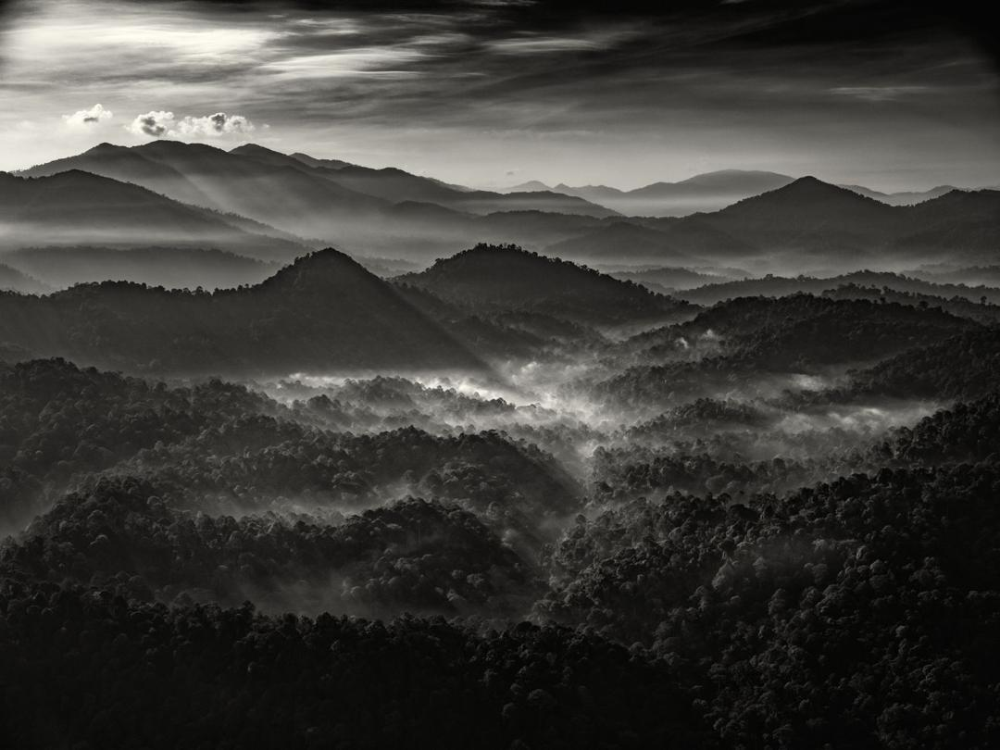
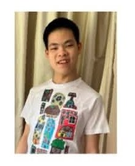
Chua Chong Sheng, born in 2005 in Kuala Lumpur, Malaysia, began his art journey in late 2023 during what was supposed to be his gap year after completing high school. That first trial art class led him on an unconventional pathway where his creativity was unearthed and highlighted in his paintings of whimsical houses, holiday-inspired nature paintings, and works that reflect his love for cars. From having the odds stacked against him — born premature at 32 weeks with a grim prognosis, in the NICU at the age of 1 month, unlikely to be able to attend school — to who he is today, his life journey, which began with multiple hospitalisations and continues with the multi-faceted challenges brought on by his cerebral palsy, is a quiet yet powerful underlying message embedded in all his paintings: you need not be limited by a label. Using his usual medium of acrylic paint, acrylic markers and pigment ink on canvas, his cheerful and vibrant paintings have been shared with the public at group exhibitions including Sport My Art (2024), Telur Pecah 4.0 (2024), Discovering A Beautiful Mind (2025), and Beautiful Malaysia (2026), and via his Instagram account @artbychongsheng. His paintings, commissioned artworks, and merchandise have found their way to new homes in Malaysia, Singapore and the UK, spreading beauty, joy and hope to all.
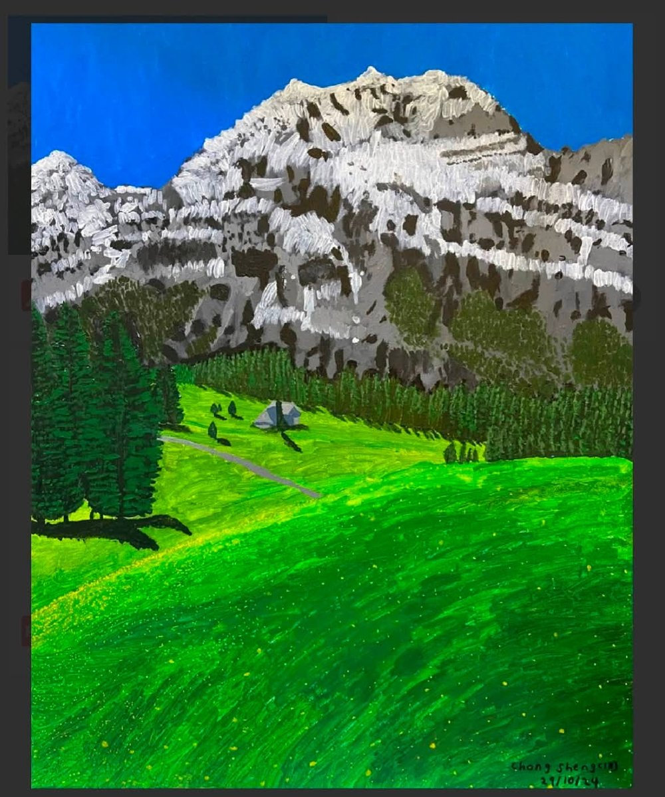
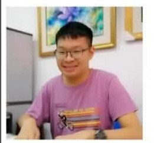
Xin Kai was born in 2003 in Subang Jaya, Selangor, Malaysia. He is an artist who uses drawing and painting to share his thoughts and feelings. The art he creates is inspired by what he is interested and cares about, turning personal emotions into images that help him communicate — especially when expressing through words is difficult. At the age of 4, Xin Kai was diagnosed with a learning deficiency. After his diagnosis, he was introduced to various lessons to improve his overall wellbeing, such as piano playing and swimming. Everything eventually changed when his parents discovered his incredible drawing abilities when he was 7 years old. Hence, they started enrolling him into drawing lessons. Since then, Xin Kai's art journey has officially begun. Over the years, Xin Kai has developed a strong love for drawing. What started as a personal journey has grown into a lasting passion. Creating art brings joy, comfort, and peace. Xin Kai hopes that through his art, people can feel these emotions too. By turning inner ideas into visible artworks, Xin Kai works to bring clarity and life to his imagination, making sure each piece of art truly reflects his feelings, wishes, and growing artistic voice.
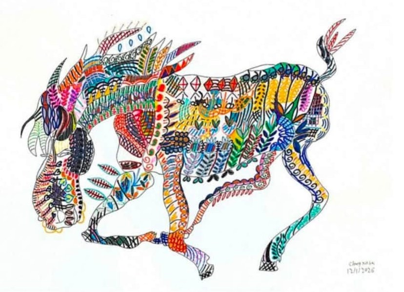
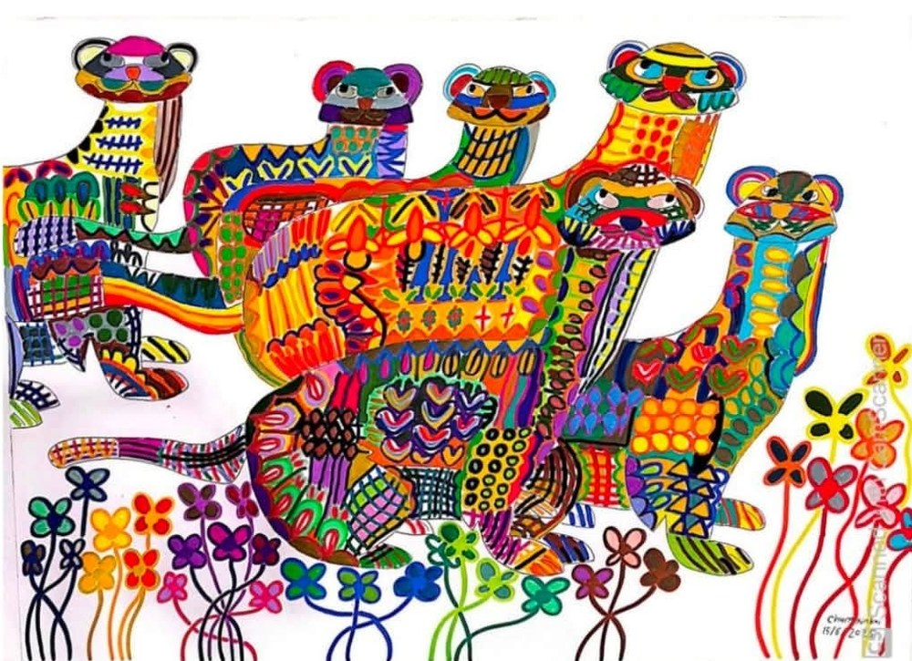
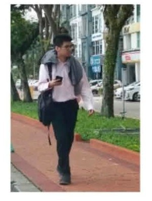
Hi, I'm How Kae Riang, but you can call me Kelvin. I was born in 2000 in Subang, Selangor, Malaysia. I have Asperger Syndrome, but it's never stopped me from doing what I love. Since I was very young, I've enjoyed drawing — especially things that catch my interest. I never had formal training, but I can sketch clearly and in detail just by observing. Besides drawing, I love dancing and have a strong connection to music. I'm also known for my sense of direction — sometimes I can find places more accurately than a GPS! I have a big interest in history, especially World War I and II, and the Three Kingdoms. My favourite historical figure is Guan Yu, and I enjoy remembering and sharing stories from those times. I also took part in the Rainbow In My Heart Art Competition in 2012 and 2013.
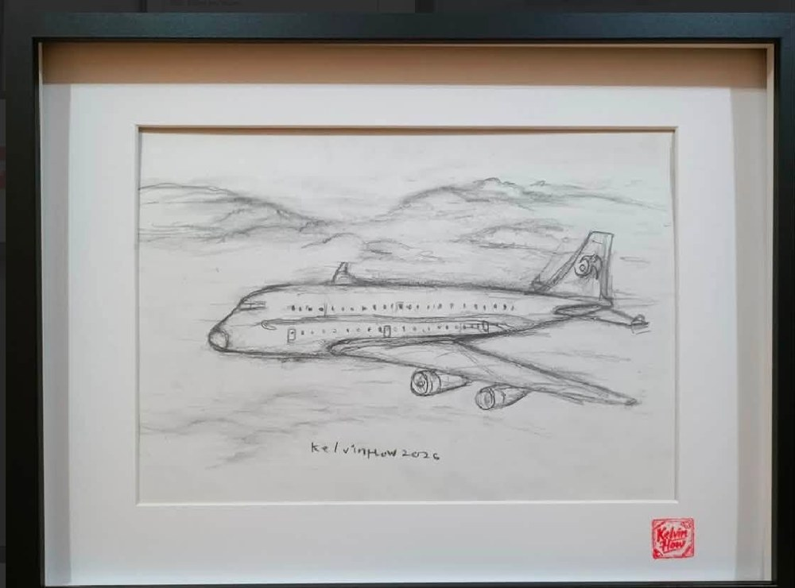
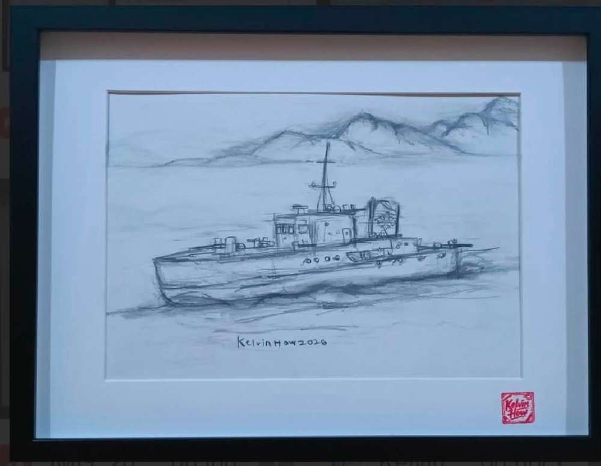
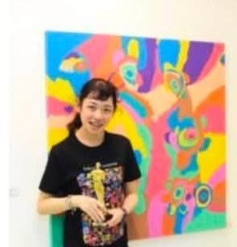
Janet Lee (1989–2023) was a Malaysian colourist celebrated for her vibrant, intuitive use of colour. Based in Kuala Lumpur, she worked across acrylics, pastels, watercolours, coloured pencils, marker pens, and Chinese ink. Her bold and pastel tones, paired with carefree, fluid strokes, conveyed spontaneity and emotional clarity. Her artistic journey began with simple wave-like patterns in childhood and evolved following formal training in 2010. Over time, her work expanded into landscapes, florals, and notable series such as Time of Day and Balloons, where rhythm, repetition, and colour became central to her expression. Janet lived with epilepsy from infancy and was later diagnosed with an intellectual disability, yet remained deeply committed to her art throughout her life. She continued creating until her passing in 2023. Her works have been exhibited both locally and internationally, including in The Hidden Truths Project (USA). Her artworks are held in private collections worldwide and by the Korea Culture Art Research Institute in Seoul. Today, her legacy continues through the Janet Lee Gallery — sharing her art, supporting neurodiverse creatives, and expanding conversations around inclusion through art, storytelling, and community engagement.
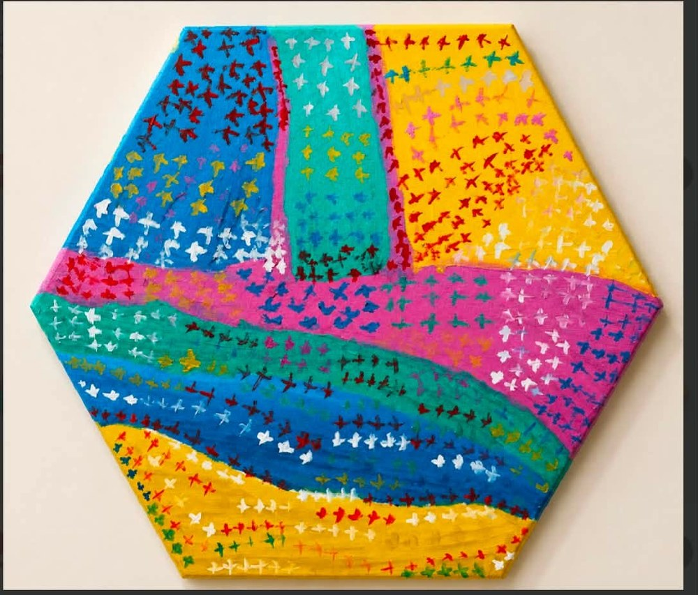
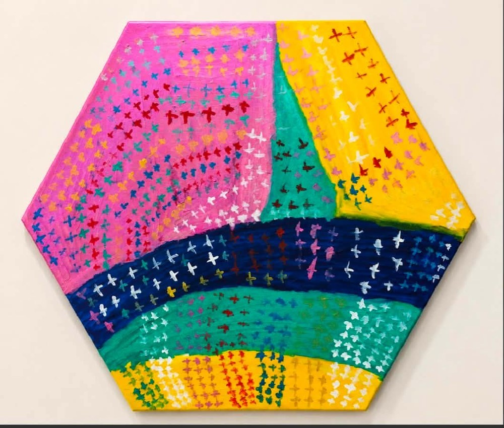
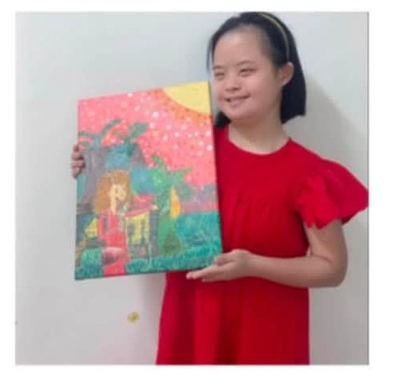
Lim Yu En (KL, Malaysia, 2008) is a young and passionate artist who uses her creativity to make a meaningful impact on society. Through her artwork, she expresses themes of care, inclusion, and hope, while actively contributing to charitable causes. Since 2021, she has been involved in fundraising through art, beginning with raising RM5,000 via an artwork auction under the Help the Helpless programme organised by Yayasan Nanyang Press. Her commitment to using art for good continued to grow in 2024, when she raised funds for UNICEF through the Peace for Tomorrow, Art for Today event organised by Sequoia International School. In the same year, she received recognition for her artistic talent by winning an award at the Nature and Special Kids event organised by Caring Cluster Foundation. Her work was also selected to represent Malaysia at the Asia Pacific Down Syndrome Federation General Meeting 2024, marking an important milestone in her artistic journey. In 2025, she extended her contribution beyond fundraising by donating therapy equipment to the University of Malaya Medical Centre Child Development Centre. In 2026, she continued her philanthropic efforts by raising funds for Doctors Without Borders through an art exhibition held at Parliament of Malaysia. Her journey reflects a powerful belief that art is not only a form of expression, but also a way to contribute, inspire, and create positive change in the community.
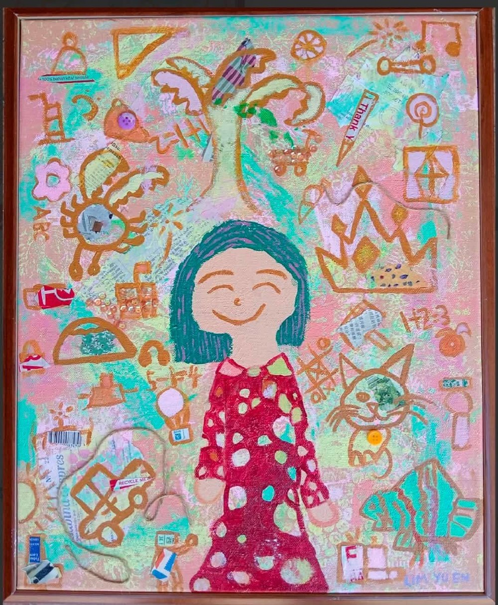
Mohd Azlan MAM (b. 1974, Balik Pulau, Penang) is a Malaysian contemporary visual artist whose practice intersects medical imaging, archival aesthetics, and socio-political critique. Trained in diagnostic imaging, he employs collage, scanography, analog photography, risograph printmaking, hand-tinting, and found historical materials to construct layered visual investigations into memory, nationalism, religion, race, and institutional power. His works are distinguished by faceless figures, fractured archives, and dense metaphorical imagery that challenge official narratives. Major series include The Ballads of Local Magnitude, The Memoirs of Panopticon Brotherhood, and The Mapping of Wayang Kertas. He lives and works in Kuala Lumpur while continuing a professional career in advanced cardiovascular imaging. Artist statement: "My practice investigates the epistemology of the image — how visual culture constructs, mediates, and contests knowledge rather than merely representing reality. Drawing upon more than three decades of professional experience in diagnostic and cardiovascular imaging, I approach artistic production as a form of visual investigation in which images function as instruments of inquiry rather than objects of aesthetic consumption... I develop what I describe as a Tomographic Visual Philosophy — an epistemological methodology that borrows conceptually from medical imaging. Like tomography, my works seek to reconstruct hidden structures that remain invisible beneath the surface of social and political life... my work asks not simply what we see, but how we have learned to see." — Azlan MAM
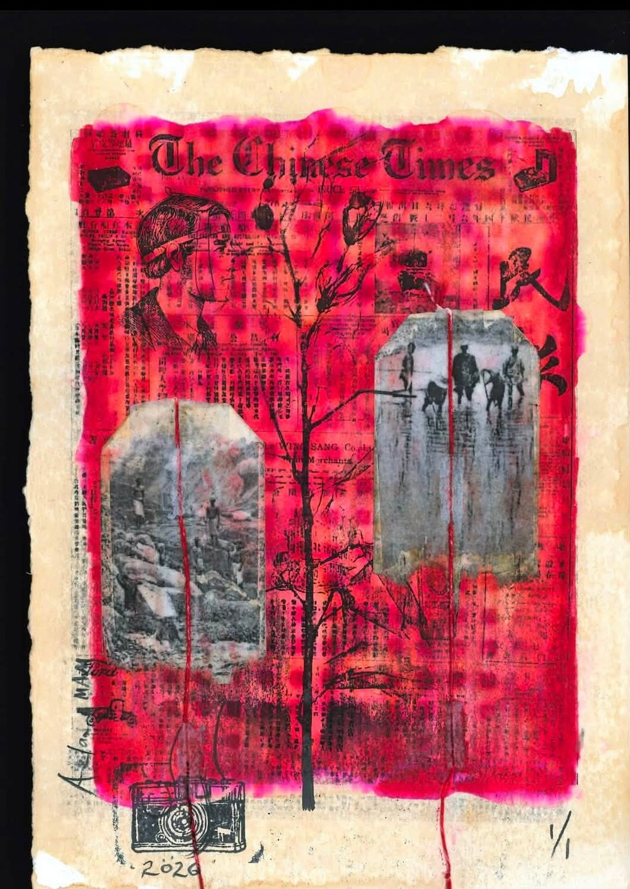
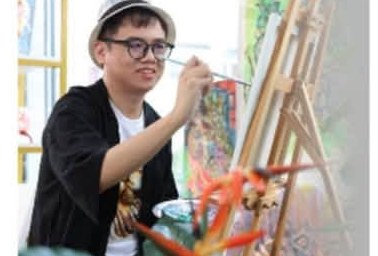
Born in Penang in 1991, Malaysia, Ng Yi Shen is an emerging artist whose journey reflects resilience, creativity, and self-discovery. Diagnosed with autism and facing slow learning challenges, Yi Shen found his voice through art. Inspired by a deep love for animals and Disney animations, his works uniquely blend human emotions with animal expressions, offering a warm, imaginative view of the world. Despite early struggles, Yi Shen earned a Bachelor of Arts in Liberal Studies with honours, a milestone that boosted his self-confidence and social skills. His artistic journey has grown alongside his personal development, leading to exhibitions in the Philippines, China, and Italy — Turin (March 2023), Philippines (December 2024), and Beijing (May 2025). His art is more than visual expression — it is a celebration of triumph over adversity. Every piece tells a story of growth, courage, and compassion, reflecting the strength of the human spirit. Artist's statement: "Blending life harmoniously in my artistic works."
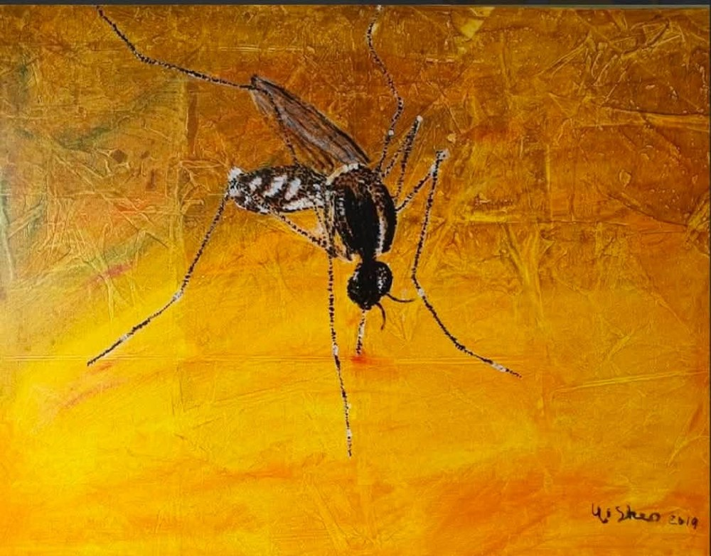
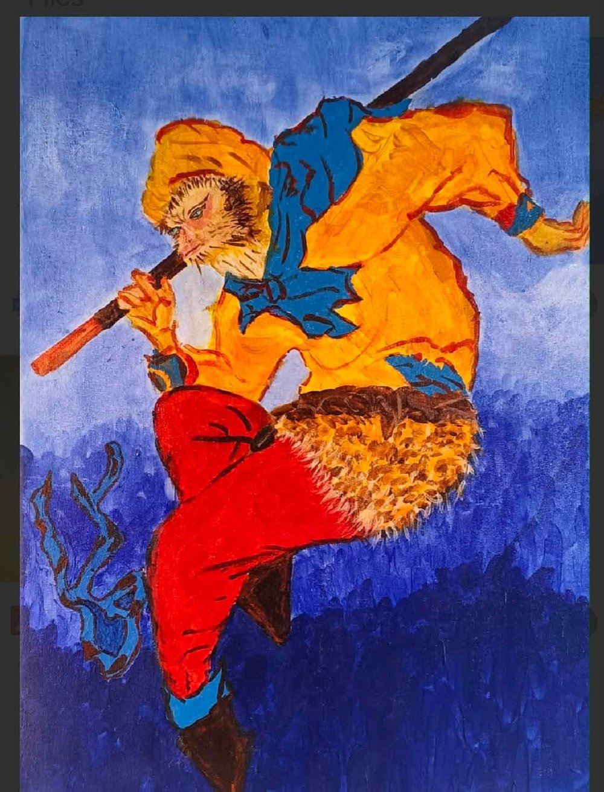
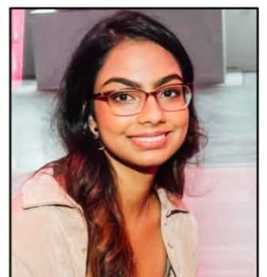
Prajna is an emerging artist who is high-functioning on the Autism Spectrum. She is an Indian expat living in Kuala Lumpur, Malaysia, born in 2005. She has a deep love for all things art, craft, and handmade, often created with vibrant colours and expressive forms. Over the past few years, she has been dedicatedly learning and exploring different art styles, driven by her dream of becoming a professional artist. Prajna loves to paint and uses bold colours in her paintings. Her eye for detail is her biggest strength, combined with her passion and interest in art. She has created paintings in different mediums such as oil, acrylic, watercolour and oil pastels during her high school journey where she studied art. She has of late taken an interest in learning the various folk-art forms of India, her home country, which helps her stay connected to her culture and identity. She loves to make gifts using art such as hand-drawn coasters, keychains, bookmarks, greeting cards and more, and also makes handmade Indian floor art that she has been successfully selling for the last five years. You can support her work and follow her on Instagram: "Artistic Spectrum by Prajna" (@artisticspectrumprajna).
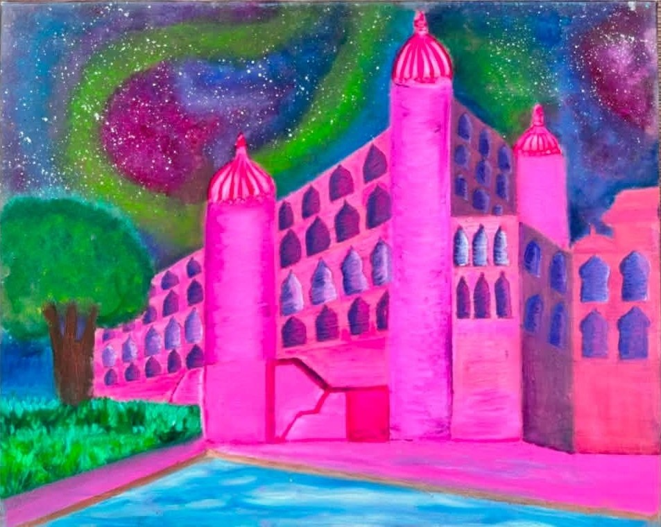
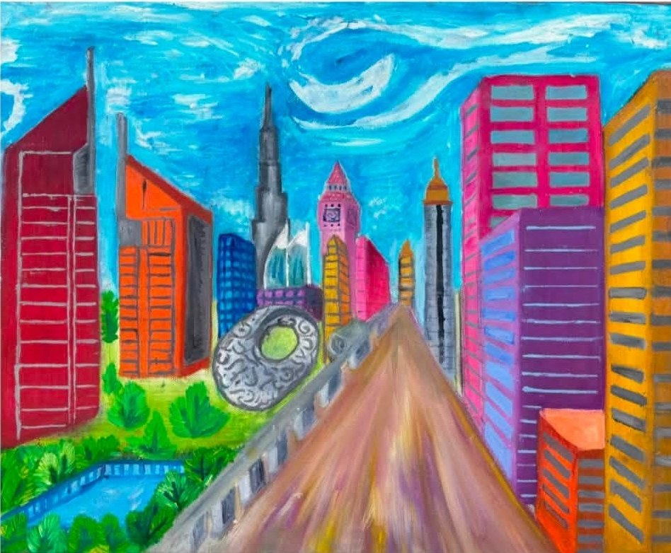
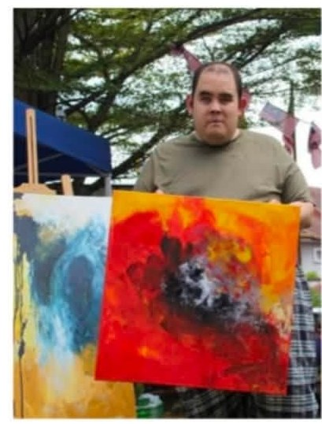
Shafiq Nazri was born in 1992 in Shah Alam, Selangor. Born prematurely at 900 grams, he developed Hyaline Membrane Disease and was placed on a ventilator for 12 weeks. He subsequently developed Retrolental Fibroplasia, which left him with complete retinal detachment in the right eye and impaired vision in the left. Serial hearing evaluations found severe neurosensory deafness from about 6 months of age, and he has no comprehensive speech. Shafiq is profoundly deaf, partially blind, hyperactive, and was diagnosed as autistic at the age of 10. At age 15 he experienced his first seizure and has since been diagnosed as epileptic, requiring lifelong medication. His learning capacity is very limited. He attends Pusat Jagaan Sayang, where he loves to paint — abstract painting is his way of expressing himself. As a hyperactive child he cannot sit still for long, so each painting takes time to complete, depending on his mood. Despite all the medical issues he faces, he continues to paint, occasionally but persistently.
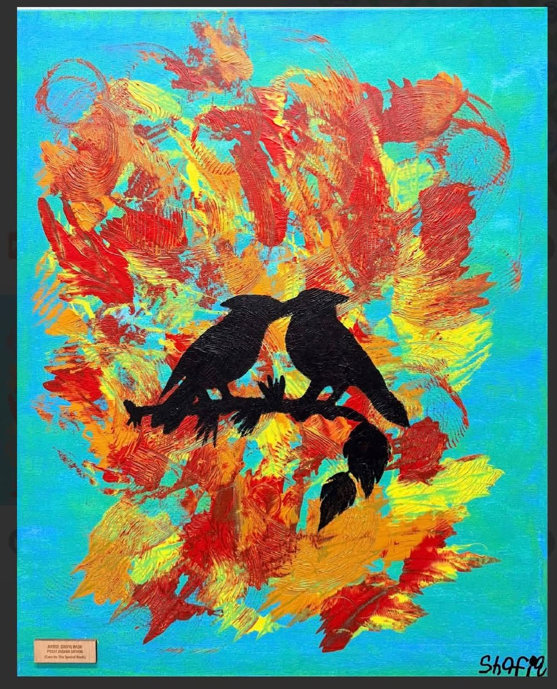
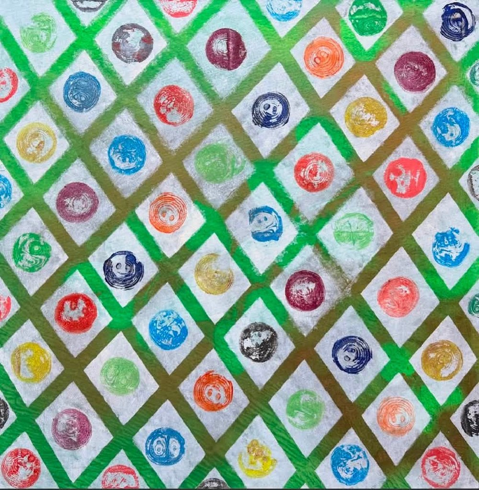
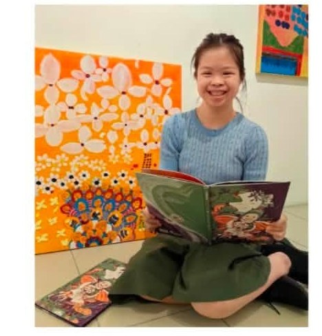
Shana Lim (born 2004, Kuala Lumpur, Malaysia) is a Malaysian contemporary artist whose practice explores emotion, intuition, and the expressive power of colour. Living with Down syndrome, she approaches painting as an instinctive process, allowing movement, rhythm, and layered pigments to shape compositions that communicate beyond language. Her works often centre on floral and organic forms, evoking growth, resilience, and quiet strength. Through fluid techniques and spontaneous gestures, Shana creates dynamic visual landscapes that balance tenderness with vitality. Since 2022, she has exhibited on major Malaysian contemporary art platforms and presented her first solo exhibition in 2024, establishing a distinctive artistic voice marked by sincerity and presence. Alongside her studio practice, she also participates in inclusive fashion platforms as a runway model, extending her creative expression beyond the canvas while continuing to advocate visibility and inclusion through art.
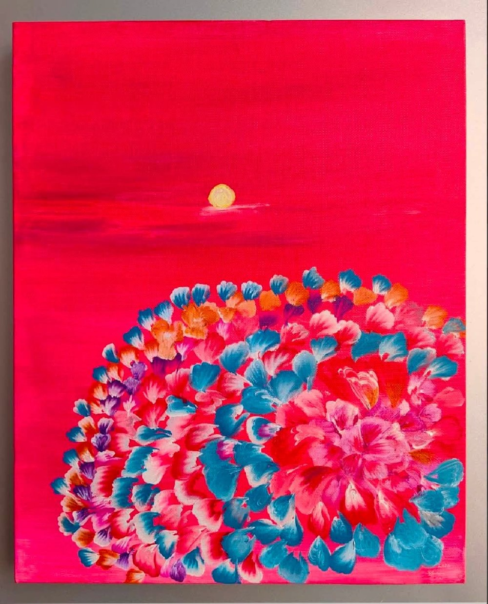
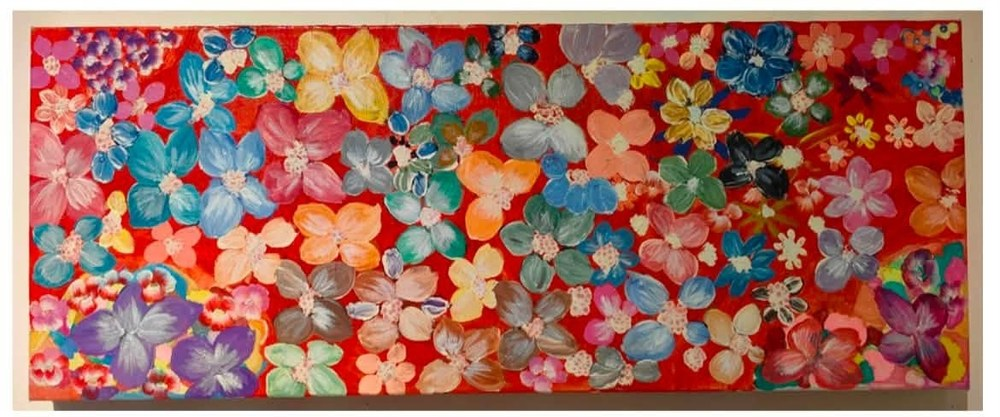
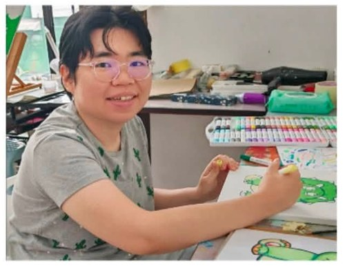
Stephanie Kuan (b. 1991, Malaysia) is an aspiring artist whose work is inspired by music and personal expression. Living with intractable epilepsy since the age of 12, she finds joy and resilience through creating art. Each piece serves as an exploration of technique, emotion and connection, reflecting her evolving creative journey. In 2025, she participated in her first international exhibition, the Hidden Truths Project, USA, where two of her artworks were selected for the online showcase — a meaningful milestone in her development. As an only child, she draws strength from her close-knit family support while continuing to develop her artistic voice.
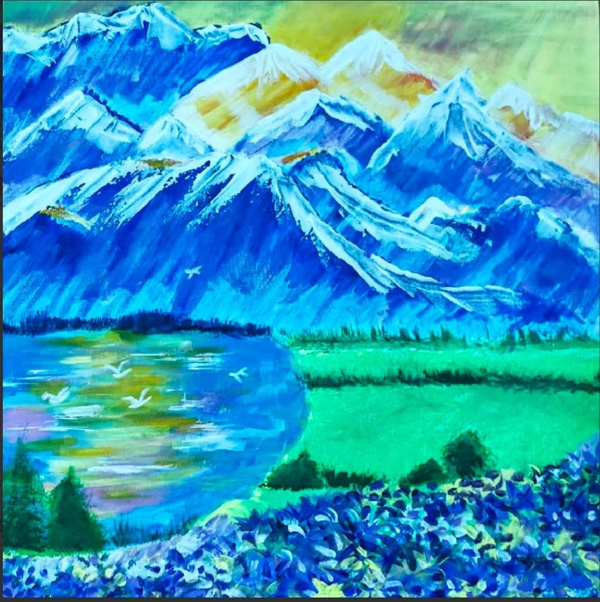
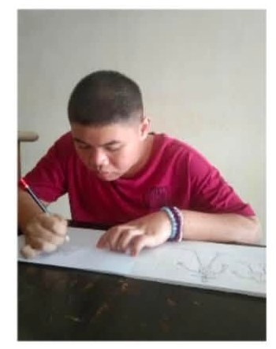
I'm Thong Kah Wei (born 2005), born in Malaysia and living with autism. My passion lies in painting, with a special fascination for robots, drawn to their strength and unique aesthetics. I express my art on canvas bags, T-shirts, and small pouches, and I welcome your support. If you share my love for robots, I'd be thrilled to connect and share this passion with you.
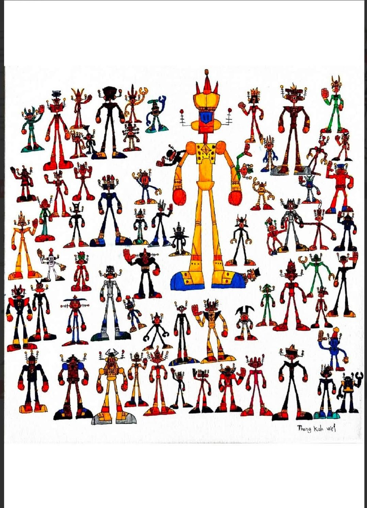
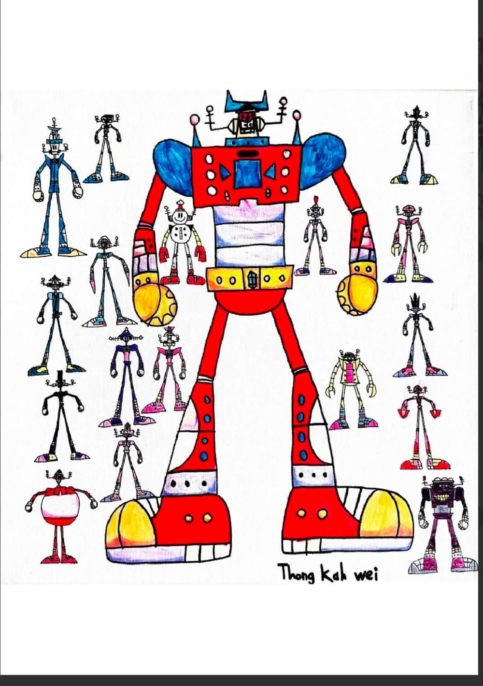
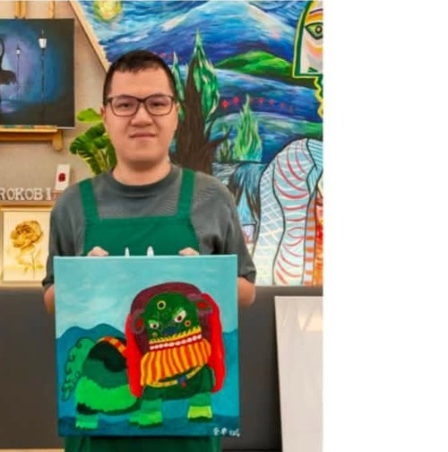
Wallace Liow (or Lion), Sabah-born, 1999, is incredibly unapologetically himself — that you have to see it in real life to believe. Meeting him gives you dramatic expressions, sound effects — the works of golden-age cartoon energy where emotions are never small and honesty comes unfiltered. His exaggeration reaches out where words fail him in his never-ending search for friends. He stepped up to make art his career when others thought he was destined for a plain life of no direction, held back by autism and mild ADHD. 'Tis a clear sign of an underdog in the making. Lo and behold the centrepiece of Wallace's world: the lion. Inspired by lion dance, Wallace pours on paper what he dreams to be — fiercely powerful yet vibrantly playful, like the courageous dancers manoeuvring a jovial lion. If Wallace ever approaches you excitedly and shoves a drawing into your hands before you could process what's happening, just take it as a sign that he has deemed you as friend-worthy. Congratulations! Instagram: @weliontogether
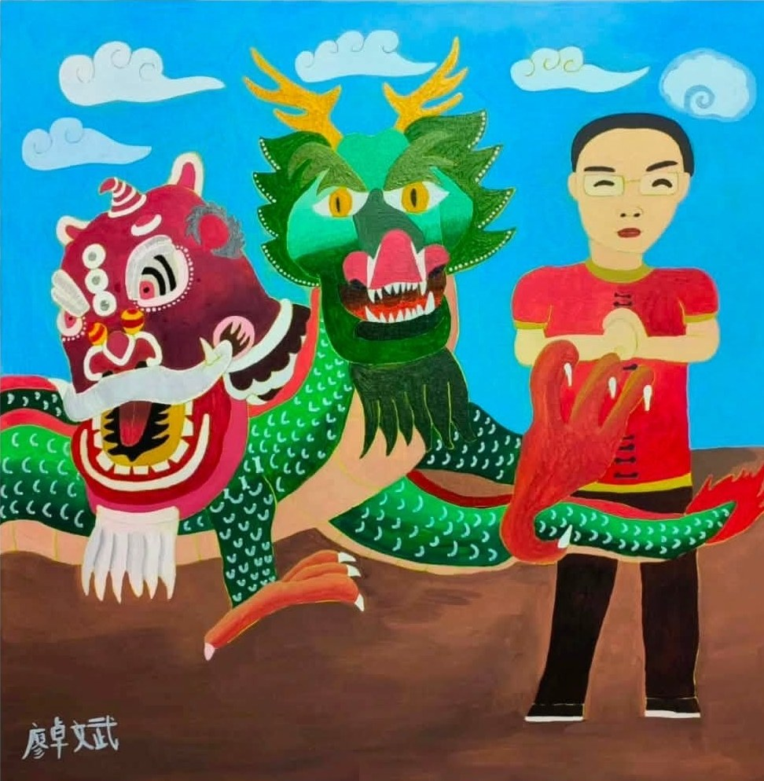
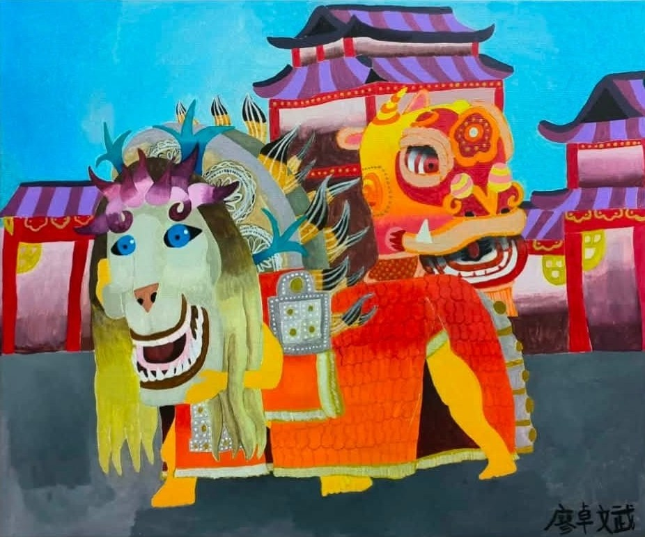
Born on September 8, 1951, in Carey Island, Selangor. He did not receive any formal education in the arts, and began working as a graphic artist in several publishing companies from around 1976 until 1990, before turning to painting full-time. His work is now held in museums, art galleries, and by private collectors.
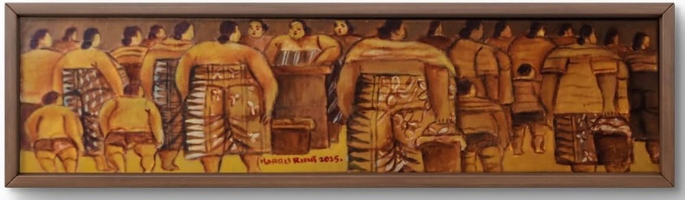
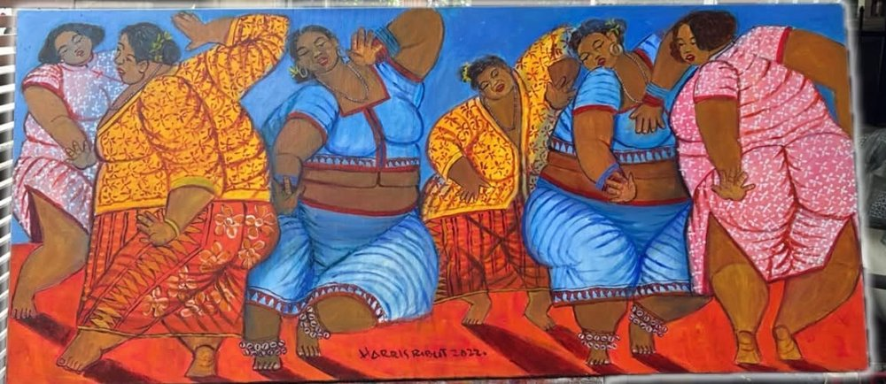
Born 1997 in Kuala Lumpur, Alicia Lee has been passionate about art since young. Alicia's work is ambiguous in meaning yet visually strongly defined by her drawings of characters, which she considers her imaginary friends, as well as her thoughts and emotions. Despite being a slow learner and her inability to understand complex concepts, it has never affected her keen interest and passion in art. She uses ink pen and acrylic for her creations, and hopes that her paintings make people feel optimistic and inspired. Alicia has shown her work in exhibitions both locally and abroad. Her distinctive style has drawn the attention of collectors from various countries, affirming that art truly speaks a universal language.
Ainaa Farhanah is a Malaysian visual artist and the founder of Conteng by Ainaa. She holds a degree in Graphic Design from Nottingham Trent University, completed through a twinning programme with First City University, and has participated in over 30 events, exhibitions, and competitions, reflecting an active and evolving professional practice. Living with Spinal Muscular Atrophy (SMA), Ainaa approaches art as both creative expression and personal resilience. Her work celebrates individuality, difference, and the enduring presence of the human hand, emphasising that imperfection is central to meaningful experience. Her practice centres on freehand, hand-drawn illustration guided by spontaneity and intuition. Working primarily with brushes and palette knives, she creates organic lines, layered patterns, and instinctive compositions. Each artwork is allowed to evolve naturally, embracing the unpredictability of the hand-drawn mark. At its core, Ainaa's work explores themes of impermanence and the human touch within an increasingly standardised world.
An established Malaysian figurative painter, curator and writer. 'Pretty Priest' is from his Navagraha Priests series, previously shown in Bangalore, and part of his signature series 'An Alphabet Book For the Middle Aged, Middle Classes,' which explores identity, social dynamics and multicultural pride in Malaysia.
An established Malaysian watercolourist whose work is held in the National Visual Art Gallery Malaysia, the Bank Negara Malaysia Museum, and the Singapore Art Museum. His paintings have reached RM100,000–200,000 at auction — this miniature set is a rare and generous donation.
A retired doctor donating four original watercolour paintings to the fundraiser.
Donor artist — biography not yet available.
Ian Kua Li Zhe, born in 2001 in Johor, Malaysia, discovered his love for drawing at a young age, using art as a way to express his thoughts and connect with the world around him. He began formal art lessons at age 10. Known for his strong memory and attention to detail, Ian creates works that reflect his unique perspective as an individual diagnosed with Autism Spectrum Disorder (ASD). His work has been featured in several exhibitions, where his pieces have resonated with audiences and been warmly received within the local community. For Ian, drawing is more than a skill — it is a language through which he tells his story. Instagram: @iankua23
Born in 1975, Kek Hoon Ping transitioned from a 25-year career in advertising to painting full-time. He works predominantly in watercolours and graphite, producing expressive scenes of Southeast Asian cities and his international travels. He has held solo exhibitions, including his 'MEETHOON' show. If you love Penang heritage architecture and vibrant, loose watercolour washes, his work brings immense character to a home.
Master Sum Kwai Fong (1948–2024) was a distinguished Malaysian Chinese calligraphy & brush painting artist. He dedicated his life to preserving and promoting the beauty of traditional Chinese art. A graduate of the Malaysian Institute of Art (MIA), Master Sum began his teaching career in 1975 and spent his life mentoring and inspiring students. He is recognised as one of the world's top 100 Chinese calligraphy and brush painting artists. Master Sum was also a founding member and past president of the 1 Malaysia Artists Association, where he made significant contributions to the growth and appreciation of Chinese art in Malaysia. Throughout his career he held many exhibitions and charity functions, and his paintings were acquired by collectors and art enthusiasts. Master Sum once said in an interview: "The creation of art in painting is not only a painting on the surface, nor is it an objective copy of the picture of life. Instead, it is the artist's understanding of life, attitude towards social things, and the expression of his own thoughts and personality."
One of the well-known 'Nik brothers' art trio. He earned a Diploma in Fine Art and a Bachelor (Hons) in Fine Art from the Faculty of Art & Design, Universiti Teknologi MARA. Nik Mohd Shahfiz has carved a unique niche in the contemporary art scene — his work often delves into profound themes of humanity, authority, and the complexities of societal structures.
Yew Chin Yih (b. 1975) is a contemporary Malaysian visual artist celebrated for his vibrant mixed-media works, especially his iconic “Owl” and “Galaxy” series, featured in the V'Art Space profile. He originally graduated from the National Taiwan Ocean University with a degree in aquaculture in 2000. He devoted himself to a full-time painting career in 2010 after creating “100 Happy Faces” for his daughter in 2009. Inspired by nature, his colourful paintings convey messages of environmental conservation, hope and love for Mother Earth.
Donor artist — biography not yet available.
Donor artist — biography not yet available.